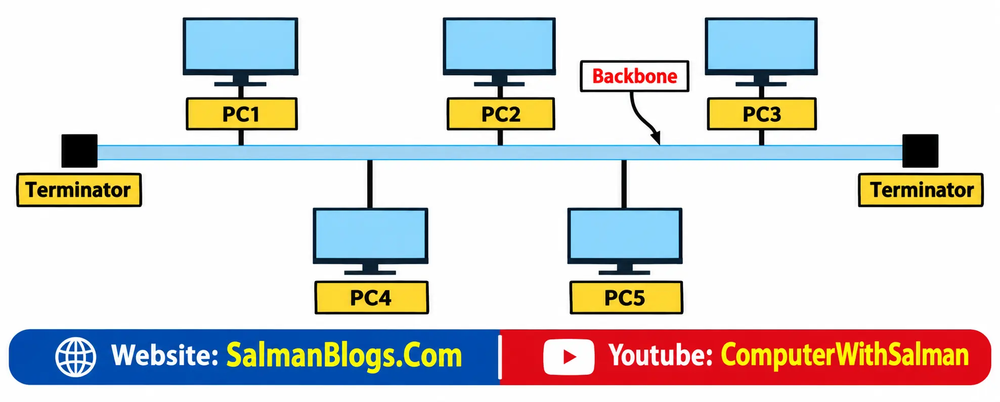
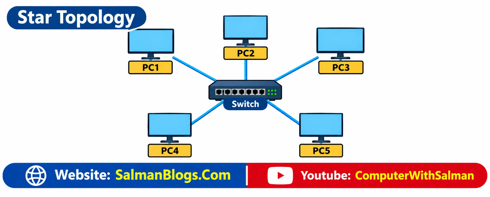
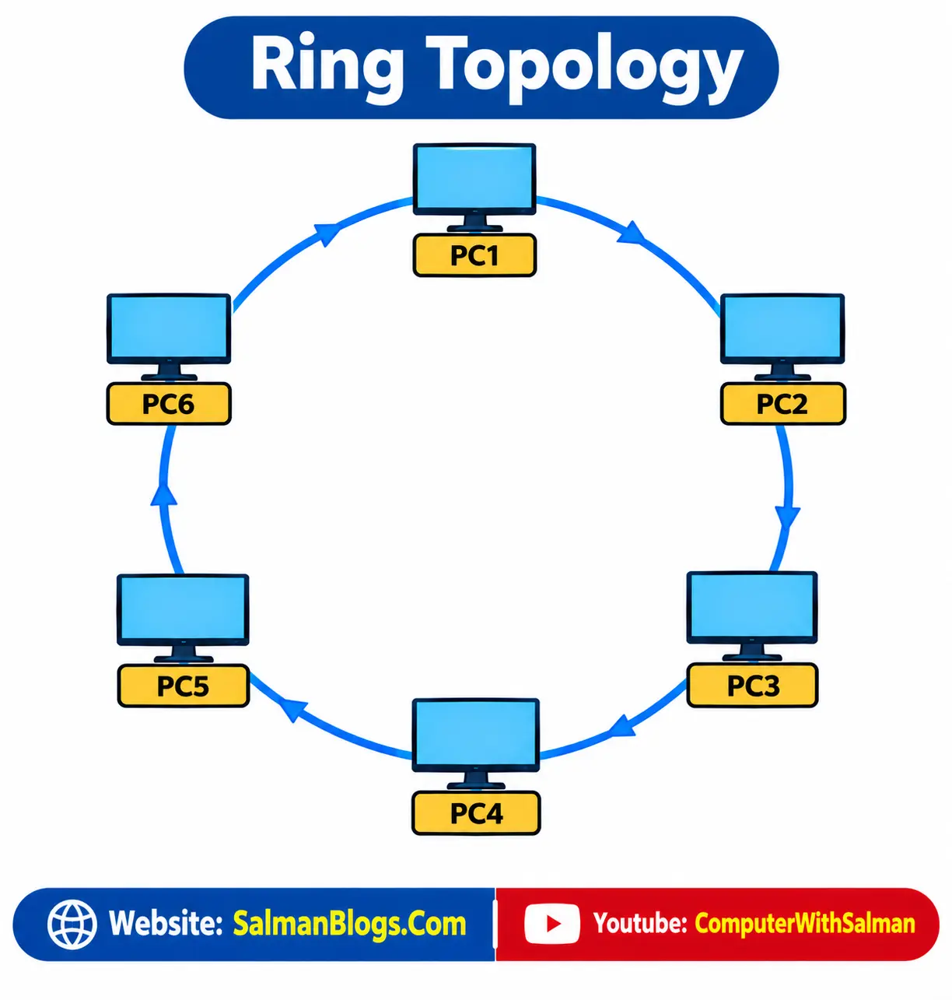
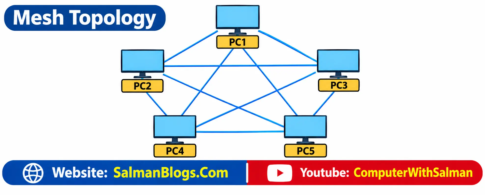
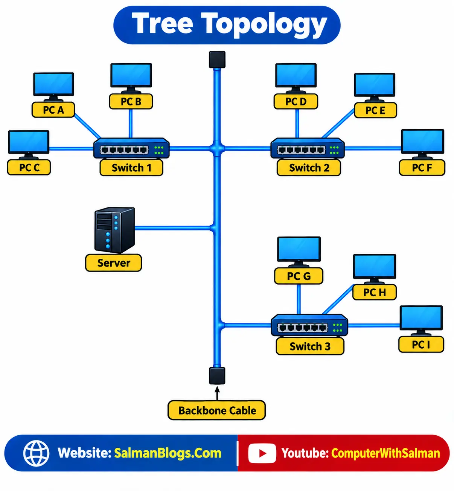
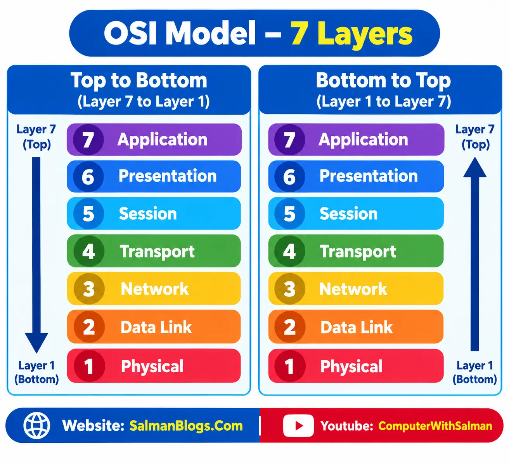

Computer Network
A computer network is a group of computers and other devices connected to each other so they can communicate and share resources.
Shared resources mean: Data, files, printers, storage, and internet connections.
Examples of Computer Networks
- School Computer Lab: Computers are connected to share files, printers, and other resources.
- Office Network: Employees' computers are connected to share data, printers, and other resources.
- Home Network: A laptop, smartphone, smart TV, and printer can be connected through a Wi-Fi router.
- Bank Network: Computers and ATMs are connected to exchange banking information and provide banking services.
- University Network: Computers in different departments are connected to share resources and access university services.
- Hospital Network: Computers are connected to share patient, medical, and administrative information.
- Internet: Millions of computers, smartphones, servers, and other devices are connected to communicate and exchange data.
Uses of Computer Network
- Internet Browsing: Networks allow users to access websites and online information.
- Mobile Phones: Networks are used for calls, messages, and mobile applications.
- Education: Schools use networks for online classes and learning systems.
- Banking: Banks use networks for online transactions and ATM services.
- Social Media: Social media platforms use networks to connect users and share content.
- Smart Homes: Networks allow users to connect and control smart devices such as lights, cameras, and appliances.
Network Architecture
Network architecture is the design and structure of a computer network. It includes the hardware, software, and communication rules (protocols) that allow devices to connect and communicate with each other.
Basic Components
- Hardware: Computers, servers, routers, switches, cables, and other physical network devices.
- Software: Network operating systems, applications, and network services that help manage and use the network.
- Communication Rules: Protocols that define how devices communicate and exchange data with each other.
Example
A school network uses computers and switches as hardware, network software and services as software, and protocols such as TCP/IP as communication rules.
Types of Computer Network
Computer networks can be classified according to their coverage area and use.
1. LAN (Local Area Network)
A LAN connects computers and devices within a small geographical area, such as a home, school, office, or computer lab.
Example: Computers connected within a school computer lab.
2. WAN (Wide Area Network)
A WAN connects networks over a large geographical area, such as different cities, countries, or continents.
A WAN used by a specific organization is also called a Private WAN.
Example: A company's network connecting its offices in Lahore, Karachi, and Islamabad is a Private WAN.
3. Public WAN
A Public WAN is a wide-area network that is available to the general public and is usually provided by telecommunication or internet service providers.
Example: The Internet is the largest example of a Public WAN.
Easy to Remember
- LAN → Small area
- WAN / Private WAN → Large area + Specific organization
- Public WAN → Large area + Public access
Networking Devices (90% Important – Long Question)
Networking devices are hardware devices used to connect computers and other devices and help them communicate and share data over a network.
The following are important networking devices:
1. NIC (Network Interface Card)
A NIC is a hardware component that allows a computer or other device to connect to a network.
It provides the device with a way to send and receive data over a network. A NIC can provide a wired connection through Ethernet or a wireless connection through Wi-Fi.
Example:
A desktop computer uses an Ethernet NIC to connect to a network using a network cable.
Main function:
Connects a device to a network.
2. Switch
A switch is a networking device that connects multiple devices within the same network.
It receives data from one device and forwards it to the correct destination device.
Example:
In a school computer lab, several computers can be connected to a switch so they can communicate and share network resources.
Main function:
Connects devices within a LAN and forwards data to the correct device.
3. Router
A router connects different networks and forwards data between them.
It determines where data should go and sends it toward the appropriate network.
Example:
A home router connects the devices in your home network to the Internet.
Main function:
Connects different networks and directs data between them.
4. Modem
A modem is a device that provides a connection between a local network and an Internet Service Provider (ISP) by converting signals used for communication over the service provider's connection.
Example:
A home internet connection may use a modem to connect the home network to the ISP's network.
Main function:
Provides communication between the user's network and the ISP.
5. Wireless Access Point (WAP)
A Wireless Access Point (WAP) allows wireless devices to connect to a network using Wi-Fi.
It provides a wireless connection between devices such as laptops, smartphones, and tablets and the network.
Example:
A school can install a wireless access point so students can connect their laptops and phones to the school network through Wi-Fi.
Main function:
Provides wireless network access to devices.
Network Topology (70% Important – Long Question) Most of the time any one topology or maximum 2 topologies can be asked to explain.
Network topology refers to the way computers, devices, and other components are arranged and connected in a computer network.
It shows how different devices are connected to each other and how data can travel between them.
Types of Network Topology
Common types of network topology include:
- Bus Topology
- Star Topology
- Ring Topology
- Mesh Topology
- Tree Topology
Bus Topology
Bus topology is a network topology in which all computers and other devices are connected to a single main cable, called the backbone cable. Backbone Cable also called Netowrk cable.
Diagram

How Bus Topology Works
- A computer sends data through the main cable.
- The data travels along the backbone cable.
- All connected computers can receive the signal.
- The computer whose address matches the destination accepts the data.
- Terminators are placed at both ends of the cable to prevent the signal from reflecting back.
Advantages of Bus Topology
- Easy to Install – It is easy to install because only one main cable is required.
- Requires Less Cable – Compared with some other topologies, bus topology uses less cable because all devices share one main cable.
- Low Cost – It is relatively inexpensive because less cable and fewer networking components are required.
Disadvantages of Bus Topology
- Main Cable Failure – If the main cable fails, the entire network can stop working.
- Performance Decreases – When many devices are connected, network performance can decrease because all devices share the same main cable.
- Difficult to Find Faults – Finding a fault can be difficult because all devices share the same cable, making it harder to identify the exact location of the problem.
Example of Bus Topology
In a small computer lab, several computers can be connected to one main cable. When one computer sends data, the signal travels through the cable and reaches all connected computers, but only the intended computer accepts the data.
Star Topology
Star topology is a type of network topology in which all computers and devices are connected to a central networking device, such as a switch or hub.
The central device manages communication between the connected devices.
Example of Star Topology
Imagine a classroom where every student communicates through a teacher. If one student wants to send a message to another student, the message goes through the teacher.
Similarly, in star topology, devices communicate through the central device.
Diagram

How Star Topology Works
- A computer sends data to the central switch or hub.
- The central device receives the data.
- It forwards the data to the intended computer.
- Other computers do not normally receive the data meant for another device.
Advantages of Star Topology
- Easy to Install and Manage – Each device has a separate connection to the central device, making the network easier to install and manage.
- Easy to Identify Faults – If one device or cable fails, it is usually easy to find the problem.
- Failure of One Cable Does Not Affect the Whole Network – If the connection of one device fails, other devices can continue communicating.
Disadvantages of Star Topology
- More Cable is Required – Every device needs a separate connection to the central device.
- More Expensive – A switch or hub is required to connect all the devices.
- Failure of the Central Device – If the central switch or hub fails, it can affect the entire network because all devices depend on it.
Ring Topology
Ring topology is a type of network topology in which all computers and devices are connected in a circular arrangement, forming a ring.
Each device is connected to two other devices, one on each side. Data travels from one device to the next until it reaches the intended destination.
Example
Imagine people sitting in a circle and passing a message from one person to the next. Similarly, in ring topology, data moves from one computer to the next around the ring.
Diagram

How Ring Topology Works
- A computer sends data to the next computer in the ring.
- The data continues from one computer to the next.
- This process continues until the data reaches the destination computer.
- The data follows the ring structure of the network.
Advantages of Ring Topology
- Less Chance of Data Collision – Data travels in an organized manner, reducing the chance of data collisions.
- Equal Access to the Network – Each computer gets a chance to transmit data.
- Predictable Data Transmission – Data follows a fixed path around the ring, making data transmission predictable.
Disadvantages of Ring Topology
- Failure of One Device or Cable – A failure of one device or cable can affect the entire network.
- Difficult to Add or Remove Devices – Adding or removing a device can be difficult because the ring connection may need to be interrupted.
- Difficult to Find Faults – Finding a fault can be difficult because a problem at one point can affect communication around the ring.
Mesh Topology
Mesh topology is a type of network topology in which devices are connected to multiple other devices. In a full mesh, every device has a direct connection with every other device.
Example
Suppose Bank A, Bank B, Bank C, and Bank D are connected with multiple links. If Bank A needs to send data to Bank D and the direct connection is unavailable, the data can travel through Bank B or Bank C.

How Mesh Topology Works
- A device sends data through a direct connection to another device.
- If one connection fails, data can often use another available path.
- In a full mesh, multiple paths are available between devices.
Advantages of Mesh Topology
- Highly Reliable – Failure of one connection does not usually stop the entire network.
- Multiple Paths are Available – Data can use another available path if one connection fails.
- Easy to Identify Faults – Individual connections can be checked separately to find problems.
Disadvantages of Mesh Topology
- Expensive – A large number of cables and network connections are required.
- Difficult to Install – Many connections have to be made between devices.
- Difficult to Manage – Managing the network becomes difficult when there are many devices and connections.
- Requires More Cables – Mesh topology requires more cables as compared with other topologies.
Tree Topology
Tree topology is a type of network topology in which devices are arranged in a hierarchical structure. It combines the features of star topology and bus topology. In a tree topology, multiple smaller networks are connected to a main backbone cable.
Example
In the example below, the backbone cable acts as the main connection. Several switches are connected to the backbone, and each switch connects multiple computers. For example, Switch 1 connects PC A, PC B, and PC C, while Switch 2 connects PC D, PC E, and PC F. Similarly, Switch 3 connects PC G, PC H, and PC I. A server is also connected to the network.

How Tree Topology Works
- The backbone cable provides the main connection between different sections of the network.
- Switches are connected to the backbone and act as connection points for groups of devices.
- Each switch connects multiple computers and other network devices.
- Data can travel from one device through its switch and the backbone to another part of the network.
Advantages of Tree Topology
- Easy to Expand – New devices or branches can be added to the network without changing the entire structure.
- Suitable for Large Networks – Devices can be divided into different groups or branches, making large networks easier to organize.
- Easy to Manage – Each branch can be managed separately through its switch.
- Easy to Identify Faults – Problems can often be located within a particular branch of the network.
Disadvantages of Tree Topology
- Backbone Failure – If the main backbone cable fails, communication between different branches may be affected.
- Expensive – More cables, switches, and other networking equipment are required.
- Difficult to Install – Setting up the hierarchical structure requires careful planning and configuration.
- Requires More Cables – Tree topology uses more cables because several branches and devices need to be connected.
Network Models and Layers
A network model is a framework that explains how data moves from one device to another over a network. It divides network communication into different layers, where each layer performs a specific job.
The two common network models are OSI and TCP/IP.
OSI Layers Model (80% Important – Long Question)
[Also called OSI Model, Layers Model, OSI Model]The OSI (Open Systems Interconnection) Model divides network communication into 7 layers. Each layer performs a specific function and works together with the other layers to transfer data between devices.
Diagram

| Layer | Name | Explanation |
|---|---|---|
| 7 | Application | Provides network services directly to applications used by users, such as web browsers, email, and file-transfer applications. |
| 6 | Presentation | Prepares data so that different systems can understand it. It also handles data formatting, encryption, decryption, and compression. |
| 5 | Session | Establishes, manages, and terminates communication sessions between applications. It keeps communication organized while data is being exchanged. |
| 4 | Transport | Controls the delivery of data between devices. It divides data into smaller parts and helps ensure that the data reaches the destination correctly and in the proper order. |
| 3 | Network | Handles logical addressing, such as IP addresses, and determines the best path for data to travel between different networks. |
| 2 | Data Link | Transfers data between devices on the same network. It uses MAC addresses and helps detect errors that occur during local data transmission. |
| 1 | Physical | Deals with the actual transmission of data as electrical signals, radio waves, or light signals through cables or wireless connections. |
Network Protocols and Services (85% Important – Long Question)
Network protocols are rules that define how devices communicate and exchange data over a network. Different protocols are used for different network services.
1. TCP/IP
TCP/IP (Transmission Control Protocol/Internet Protocol) is a set of protocols used for communication between devices on a network.
- TCP (Transmission Control Protocol) controls the transmission of data and helps ensure that it reaches the destination correctly and in the proper order.
- IP (Internet Protocol) provides addresses for devices and helps deliver data to the correct destination.
Example: When two devices communicate over the Internet, TCP manages the transmission of data, while IP uses device addresses to deliver the data to the correct destination.
2. HTTP
HTTP (HyperText Transfer Protocol) is used to transfer web pages and other web content between a web browser and a web server.
Example: Opening a website using an HTTP connection.
3. File Transfer Protocol (FTP)
FTP (File Transfer Protocol) is used to transfer files between computers over a network. It allows users to upload and download files.
FTP is commonly used by web developers to transfer website files between their computers and web servers. It can also be used to transfer large files.
Example: A web developer uses FTP to upload website files from their computer to a web server.
4. DNS
DNS (Domain Name System) converts domain names into IP addresses so computers can locate servers on a network.
Example: When you enter
google.com, DNS helps find the IP address of the Google
server.
IP Addressing
IP addressing is the method of giving an IP address to each device on a network so that devices can identify and communicate with each other.
Example: 192.168.1.10
Types of IP Addresses
1. IPv4
IPv4 uses a 32-bit address written in four numbers separated by dots.
Example: 192.168.1.10
Total Possible Addresses
Since IPv4 uses 32 bits, the total number of possible addresses is:
232 = 4,294,967,296 addresses
Therefore, IPv4 can theoretically provide about 4.29 billion unique IP addresses.
Network Part
The network part identifies which network the device is connected to, such as the network of a school, office, or home.
Host Part
The host part identifies the specific device connected to that network.
Example
IP Address: 192.168.1.10
-
Network Part:
192.168.1→ identifies the local network. -
Host Part:
10→ identifies the specific computer or device on that network.
Network Part → Which network?
Host Part → Which device?
2. IPv6
IPv6 uses a 128-bit address written in hexadecimal numbers separated by colons.
Example:
2001:0db8:85a3:0000:0000:8a2e:0370:7334
Total Possible Addresses
Since IPv6 uses 128 bits, the total number of possible addresses is:
2128 = 340,282,366,920,938,463,463,374,607,431,768,211,456 addresses
This is approximately 3.4 × 1038 addresses.
IPv6 Address
Example:
2001:db8:1234:5678:abcd:1234:5678:0001
1. Global Routing Prefix → Which Main Network?
The Global Routing Prefix identifies the main network assigned to an organization.
For example, a university gets a large IPv6 network from its Internet Service Provider (ISP).
2001:db8:1234
This part tells us that the address belongs to this organization's network.
2. Subnet ID → Which Smaller Network?
An organization can divide its large network into smaller networks called subnets.
For example, a university may have:
- Computer Lab → Subnet 1
- Administration → Subnet 2
- Teachers → Subnet 3
5678
This part identifies which subnet the device belongs to.
3. Interface ID → Which Device?
Finally, the Interface ID identifies the specific device inside that subnet.
abcd:1234:5678:0001
For example, this could identify one particular computer in the Computer Lab subnet.
Complete Idea
Global Routing Prefix → Organization's main network
↓
Subnet ID → Specific subnet
↓
Interface ID → Specific device
Global Routing Prefix + Subnet ID = Network Part
Interface ID = Host/Device Part
Example
Imagine a school network:
School → Computer Lab → Computer 5
- Global Routing Prefix = School's main network
- Subnet ID = Computer Lab
- Interface ID = Computer 5
Subnetting
Subnetting is the process of dividing one large network into smaller networks called subnets.
Example: A school can divide its network into separate subnets for the Computer Lab, Teachers, and Administration.
NAT (Network Address Translation)
NAT (Network Address Translation) is a technique used by a router to translate private IP addresses into a public IP address when devices communicate over the Internet.
Devices in a home, school, or office use private IP addresses. When they access the Internet, the router uses NAT to replace the private IP address with its public IP address.
Home Network Setup and Configuration
A home network is a network that connects devices in a home so they can communicate and share resources, such as an Internet connection, files, and printers.
Components of a Home Network
- Router: Connects the home network to the Internet and directs data between devices.
- Network Devices: Computers, laptops, smartphones, smart TVs, printers, and other devices connected to the network.
- Ethernet Cables: Used to connect devices through a wired connection.
- Wireless Access Point (Wi-Fi): Allows devices to connect to the network wirelessly.
Wired Network Connection
A wired network connection connects a device to the network using an Ethernet cable.
Example: A desktop computer is connected to a router using an Ethernet cable to access the Internet.
Wireless Network Connection
A wireless network connection allows devices to connect to the network using Wi-Fi, without an Ethernet cable.
Example: A smartphone connects to the home router through Wi-Fi to access the Internet.
Wireless connection → Wi-Fi
Wi-Fi Security and Router Configuration
Wi-Fi security means protecting a wireless network from unauthorized access. A router can be configured to control how devices connect to the network and protect the network using a password and encryption.
Router Web Interface
A router web interface is a webpage provided by the router that allows the user to configure and manage router settings.
Example: A user can open the router's web interface to change the Wi-Fi name, password, security settings, and other network settings.
1. Router Configuration
Router configuration means setting up and changing the router's settings according to the network requirements.
Common router settings include:
- Wi-Fi Name (SSID): The name of the wireless network.
- Wi-Fi Password: The password required to connect to the network.
- Security Settings: Settings used to protect the wireless network.
- IP Address Settings: Settings related to IP addresses used by the router and network devices.
Example: A user changes the Wi-Fi name from
Home_WiFi to Salman_Home.
2. Wi-Fi Encryption
Wi-Fi encryption protects the data transmitted over a wireless network and helps prevent unauthorized users from accessing the network.
Common Wi-Fi security standards include WPA2 and WPA3.
Example: When a Wi-Fi network uses WPA2 or WPA3 with a strong password, unauthorized users cannot easily connect to the network.
3. Default Gateway
The default gateway is the device, usually the router, that provides a path from the local network to other networks, such as the Internet.
Example: When a computer on a home network wants to access a website on the Internet, it sends the data to the router, which acts as the default gateway.
Guest Network
A guest network is a separate Wi-Fi network created for visitors.
It allows guests to access the Internet without giving them direct access to devices on the main home network.
Router Web Interface → Manage router settings
Router Configuration → Set and change router settings
Wi-Fi Encryption → Protect wireless communication
Default Gateway → Provides a path to other networks
Guest Network → Separate Wi-Fi access for visitors
Network Diagnostic Tools and Commands
Network diagnostic tools and commands are used to check, test, and troubleshoot network connections. They help identify problems with devices, IP addresses, and network communication.
1. Ping Command
The ping command is used to check whether a device or server is reachable over a network. It sends a small test message to the destination and checks whether a response is received.
Example:
ping google.comIf a response is received, it generally means that the destination is reachable.
Main use: Check network connectivity.
2. ipconfig and ifconfig Commands
The ipconfig and ifconfig commands are used to view network configuration information such as the IP address, subnet mask, and default gateway.
ipconfig
ipconfig is commonly used in Windows to display network configuration information.
ipconfigifconfig
ifconfig is traditionally used in Linux and Unix-based systems to display and configure network interfaces.
ifconfigExample: You can use these commands to find your computer's IP address and default gateway.
3. Telnet
Telnet is a network protocol and command-line tool used to establish a connection to a remote device over a network.
Example: A network administrator can use Telnet to connect to a remote network device and manage it through the command line.
4. PuTTY
PuTTY is a software application used to connect to remote computers and network devices.
It supports protocols such as SSH and Telnet.
Example: A network administrator can use PuTTY to connect to a router using SSH and configure it remotely.
5. Secure Shell (SSH)
SSH (Secure Shell) is a secure protocol used to access and manage remote computers or network devices over a network.
SSH encrypts the communication between the local and remote devices, helping protect the data from unauthorized access.
Example: A network administrator can use SSH to securely connect to a remote router and configure its settings.
Network Performance
Network performance refers to how efficiently and quickly data is transferred between devices over a network. It is mainly affected by factors such as bandwidth, latency, and network delays.
1. Network Bandwidth
Network bandwidth is the maximum amount of data that can be transmitted over a network connection in a given amount of time.
It is usually measured in bits per second (bps), such as Mbps (Megabits per second) or Gbps (Gigabits per second).
2. Network Latency
Network latency is the time taken for data to travel from one device to another over a network.
It is usually measured in milliseconds (ms).
Example: If a game has 20 ms latency, data travels between your device and the game server with very little delay. If the latency is 200 ms, there will be a noticeable delay.
Causes of Network Delay
Network delay happens when data takes longer than expected to travel through a network. It can occur due to several reasons:
- Too Many Users: Heavy network usage can slow down communication because many users are sharing the available network resources.
- Poor-Quality Cables: Damaged or low-quality cables can cause errors and may result in retransmission of data, causing delays.
- Long Distance: Data may take more time to travel when the source and destination are far apart.
- Network Congestion: Too much data traffic on a network can slow down data transmission.
- Hardware Problems: Faulty or overloaded network devices, such as routers and switches, can cause delays.
Bandwidth → Amount of data that can be transmitted per second
Latency → Time taken for data to travel
Lower latency → Faster response
Network delay → Data takes longer to reach its destination
Network Load Balancing
Network load balancing is a technique used to distribute network traffic or requests among multiple servers or network links. It prevents one server or link from becoming overloaded and helps the network provide better speed, performance, and reliability.
Example: If thousands of users access a website at the same time, load balancing can distribute their requests among several servers instead of sending all requests to one server.
Benefits of Load Balancing
- Improves network speed and response time.
- Prevents overloading of a server or network link.
- Reduces the risk of server failure.
- Provides a better user experience.
- Handles high traffic more efficiently.
- Improves network reliability and availability.
Basic Load Balancing Methods
There are different methods for distributing network traffic among multiple servers.
1. Round Robin
Round Robin sends requests to servers one by one in a fixed order.
Example:
Server 1 → Server 2 → Server 3 → Server 1 → Server 2 → Server 3This method distributes requests in a simple repeating sequence.
2. Least Connection
The Least Connection method sends a new request to the server that currently has the fewest active connections.
Example: Suppose there are three servers:
- Server 1 → 10 active connections
- Server 2 → 3 active connections
- Server 3 → 7 active connections
A new user request will be sent to Server 2 because it has the fewest active connections.
3. IP Hash
The IP Hash method uses the user's IP address to determine which server will handle the request.
The load balancer calculates a hash based on the user's IP address and uses the result to select a server.
Example:
- User A → IP
192.168.1.10→ Server 1 - User B → IP
192.168.1.20→ Server 2 - User C → IP
192.168.1.30→ Server 3
Round Robin → Servers are selected one by one in order.
Least Connection → Sends the request to the server with the fewest active connections.
IP Hash → Uses the client's IP address to select a server.
Network Security
Network security means protecting a network, its devices, and data from unauthorized access, attacks, and other security threats.
1. Firewall
A firewall is a security system that monitors and controls incoming and outgoing network traffic based on security rules.
Example: A firewall can block an unauthorized connection from accessing a computer or network.
2. Encryption
Encryption converts readable data into an unreadable form so that unauthorized people cannot understand it.
Example: When data is sent over a secure connection such as HTTPS, encryption helps protect the data from being read by attackers.
3. Access Control
Access control determines who can access a network, device, or resource and what they are allowed to do.
Example: In a school network, students may be allowed to access learning resources, while an administrator may have permission to change network settings.
Common Network Security Threats
- Malware: Malicious software that can damage systems or steal information.
- Phishing: Fake messages or websites used to trick users into revealing sensitive information.
- Unauthorized Access: Accessing a network or system without permission.
- Denial-of-Service (DoS) Attack: Overloading a system or network with traffic to make it unavailable.
- Man-in-the-Middle (MITM) Attack: An attacker secretly intercepts communication between two parties.
- Password Attacks: Attempts to guess or steal passwords to gain unauthorized access.
Data Backup and Recovery
Data backup means making a copy of important data so it can be restored if the original data is lost or damaged. Data may be lost because of viruses, accidental deletion, hardware failure, or other problems.
Data recovery is the process of restoring lost or damaged data. Regular backups make recovery easier and help reduce data loss.
Types of Data Backup
There are three common types of backup:
1. Full Backup
A full backup saves all selected data in the backup.
Example: Backing up all files on a computer at once.
2. Incremental Backup
An incremental backup saves only the data that has changed since the last backup.
Example: After a full backup, only newly added or changed files are backed up.
3. Differential Backup
A differential backup saves all data that has changed since the last full backup.
Example: If a full backup was made on Monday, Tuesday's differential backup saves Tuesday's changes. Wednesday's differential backup saves both Tuesday + Wednesday changes.
Backup Storage
Backups can be stored on different types of storage, including:
- Hard Drives
- External Storage Devices
- Cloud Storage
Example: A user can save a backup of important documents on an external hard drive or in cloud storage.
Data Recovery Methods
- Backup Files: Used to restore lost or damaged data from a previously created backup.
- Recovery Software: Software that can help recover accidentally deleted or lost files.
- System Restore: Restores system settings and files to an earlier state.
- Professional Data Recovery: Specialists can attempt to recover data from severely damaged storage devices.
Usability and Security Tradeoffs
Usability
Usability means how easy a system is to use. A usable system is simple, clear, and easy to learn. Users can perform tasks without confusion.
Good Usability
- Saves time and effort
- Makes tasks easier
- Reduces confusion
- Improves user satisfaction
Example: A website with a simple menu and clear buttons is easier for users to use.
Security
Security means protecting systems and data from unauthorized access, attacks, and damage. It helps keep information private and safe.
Good Security
- Prevents unauthorized access
- Protects against viruses and hackers
- Keeps data safe and private
- Reduces risks and damage
Example: A website using strong passwords and two-factor authentication provides better security.
Tradeoff Between Usability and Security
Sometimes, increasing security can make a system harder or slower to use. This is called a usability and security tradeoff.
For example:
- Strong passwords provide better security but can be more difficult to remember.
- Extra login steps improve security but can take more time for users.
- Simple login systems are easier to use but may provide less security.
Therefore, a system should maintain a balance between usability and security so it is both easy to use and properly protected.
Multiple Choice Questions (MCQs) on Computer Networks
Test Yourself: Interactive MCQs (Computer Networks)
Multiple Choice Questions (MCQs) on Computer Networks
FAQs
Computer Networks FAQs
A computer network is a group of computers and devices connected to communicate and share resources.
LAN (Local Area Network) is a network that connects devices within a small geographical area such as a home, school, office, or computer lab.
WAN (Wide Area Network) is a network that connects devices or networks across a large geographical area such as cities, countries, or continents.
A switch is a networking device that connects multiple devices within the same network and forwards data to the appropriate destination.
A router is a networking device that connects different networks and directs data between them. A home router commonly connects a local network to the Internet.
Network topology is the arrangement or structure of devices and connections in a computer network. Common topologies include bus, star, ring, and mesh.
The OSI model is a framework that explains network communication by dividing it into seven different layers, each with a specific function.
The OSI model has seven layers: Application, Presentation, Session, Transport, Network, Data Link, and Physical.
An IP address is a logical address assigned to a device on a network so that devices can identify and communicate with each other.
IPv4 is a 32-bit addressing system that uses four decimal numbers separated by dots, such as 192.168.1.10.
IPv6 is a 128-bit addressing system that uses hexadecimal numbers separated by colons and provides a much larger number of addresses than IPv4.
Subnetting is the process of dividing one large network into smaller networks called subnets.
NAT (Network Address Translation) is a technique used by a router to translate private IP addresses into a public IP address when devices communicate over the Internet.
Network security is the protection of networks, devices, and data from unauthorized access, attacks, and other security threats.
Data backup is the process of creating copies of important data, while recovery is the process of restoring lost or damaged data from a backup.